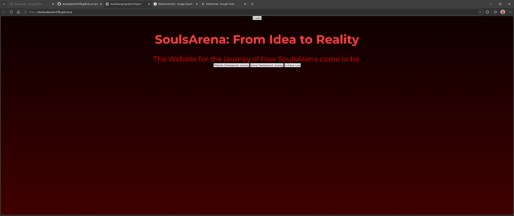
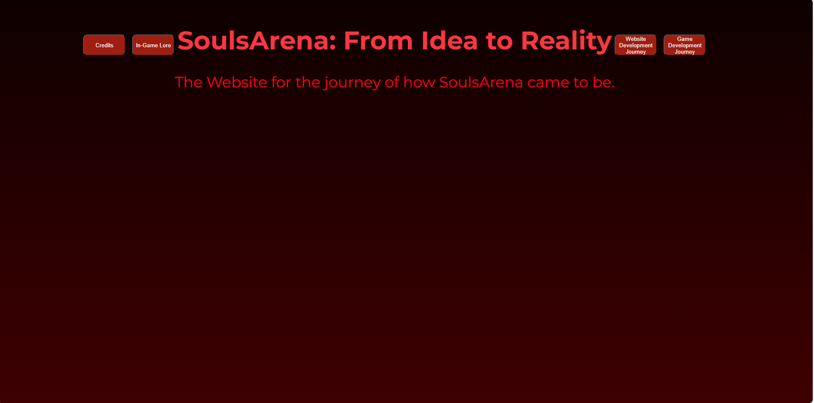
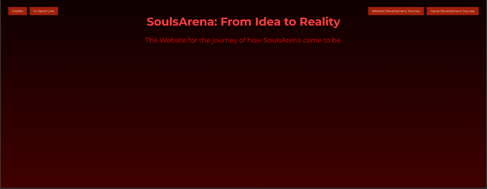
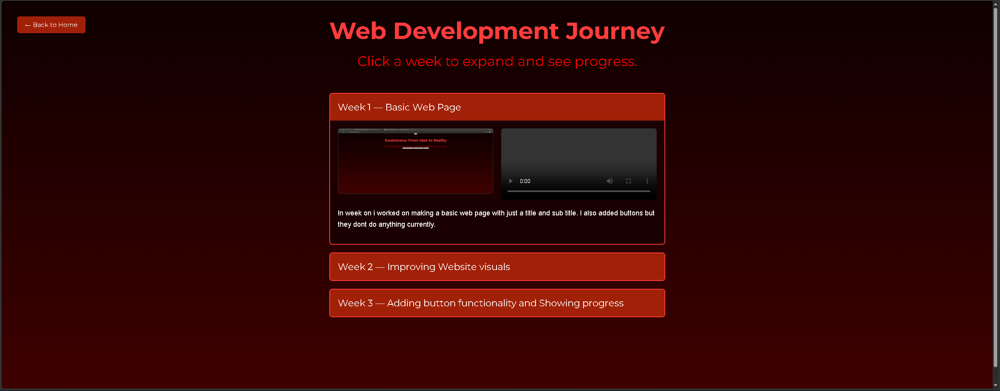
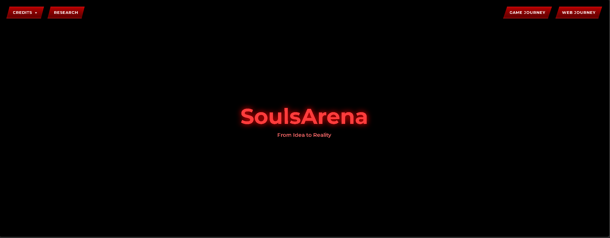

Week 1 — Basic Web Page

In week on i worked on making a basic web page with just a title and sub title. I also added buttons but they dont do anything currently. I also added a simple Gradient Background but i will eventually replace the background with a screenshot of my game.
Week 2 — Improving Website visuals

In Week 2 I started working on improving the visuals for the site, adding gradient coloring, hover effects on the buttons and just making it look more profesional overall using CSS.
Week 3/4 — Improving button functionality and Showing progress


In week 3 I fixed the positioning of the buttons, improved hovering effects, made the buttons look more round. In week 4 I added functionality to one button to start showcasing my progress for my game, I added cards that which you click open up showing videos and images and a short description of what i did that week. I did the same thing for showing my progress on my website.
Week 5/6 — Add Functionality to Credits Button


Yet to add